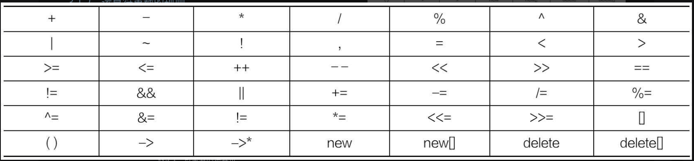

运算符重载概述¶
概述¶
在类中重新定义运算符，赋予运算符新的功能以适应自定义数据类型的运算，就称为运算符重载。
语法¶
在C++中，使用 operator 关键字定义运算符重载。运算符重载语法格式如下：
返回值类型 operator 运算符名称 (参数列表)
{
// 函数体
}
规则¶
只能重载C++中已有的运算符，且不能创建新的运算符。并非所有C++运算符都可以重载，可以重载的运算符如下图所示。其他运算符是不可以重载的，如 :: 、 . 、 .* 、 ?: 、 sizeof 、 typeid 等。

重载形式¶
运算符重载一般有两种形式：重载为类的成员函数和重载为类的友元函数。
重载为成员函数¶
运算符为类的成员函数，成员函数可以自由地访问本类的成员。运算的操作数会以调用者或参数的形式表示。
如果是双目运算符重载为类的成员函数，则它有两个操作数：
左操作数是对象本身的数据，由 this 指针指出；
右操作数则通过运算符重载函数的参数列表传递。
双目运算符重载后的调用格式如下所示：
左操作数.运算符重载函数(右操作数);
如果是单目运算符重载为类的成员函数，需要确定重载的运算符是前置运算符还是后置运算符。如果是前置运算符，则它的操作数是函数调用者，函数没有参数，其调用格式如下所示：
操作数.运算符重载函数();
重载为友元函数¶
运算符重载为类的友元函数，需要在函数前加 friend 关键字，其语法格式如下所示：
friend 返回值类型 operator 运算符(参数列表)
{
// 函数体
}
重载为类的友元函数时，由于没有隐含的 this 指针，因此操作数的个数没有变化，所有的操作数都必须通过函数的参数进行传递，函数的参数与操作数自左至右保持一致。